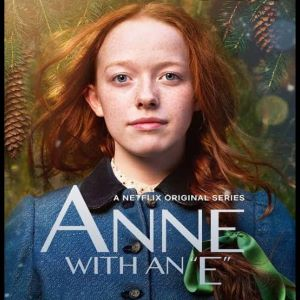
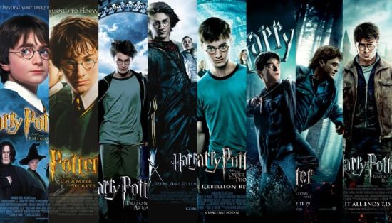
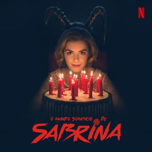
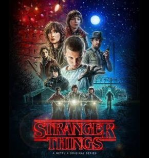

Traz a pipoca que o filme já vai começar!!
Anne With An “E”
- 3 Temporadas
- Link
- Anne with an “E” é uma história de amadurecimento sobre uma pessoa de fora que, contra todas as probabilidades e numerosos desafios, luta por amor e aceitação e por seu lugar no mundo. A série é centrada em uma jovem órfã no final da década de 1890, que, depois de uma infância abusiva passada em orfanatos e casas de estranhos, é enviada por engano para viver com dois irmãos, uma senhora mais velha e um senhor, seu irmão mais novo, ambos solteiros. Com o tempo, Anne, de 13 anos, resumirá sua vida em uma grande aventura com seus amigos, familiares e conhecidos.
Harry Potter
- 8 Filmes
- Link
- Os romances giram em torno de Harry James Potter, um órfão que descobre com 11 anos que é um bruxo, que vive no mundo comum de pessoas não-mágicas, conhecidas como "trouxas". O mundo bruxo é mantido em segredo, presumivelmente para evitar a perseguição de bruxas e bruxos. Tal habilidade é inata e essas crianças são convidadas a participar de uma escola de magia exclusiva, que ensina as habilidades necessárias para ter sucesso no mundo bruxo. Harry torna-se um estudante da Escola de Magia e Bruxaria de Hogwarts e é ali onde a maioria dos eventos da série acontecem. Enquanto Harry se desenvolve através da adolescência, ele aprende a superar os problemas que ele enfrenta: mágicos, sociais e emocionais, incluindo desafios adolescentes comuns, como amizades, paixões e provas, e o grande teste de preparar a si mesmo para o confronto no mundo real que temos pela frente. Cada livro/filme narra um ano na vida de Harry.
O mundo sombrio de Sabrina
- 3 Temporadas
- Link
- Prestes a completar dezesseis anos, a jovem Sabrina Spellman (Kiernan Shipka) é obrigada a tomar uma decisão crucial que mudará sua vida para sempre. Ela deve escolher entre o mundo das bruxas e o mundo dos mortais, enquanto luta para proteger a família e os amigos de forças sombrias que os ameaçam.
Stranger Things
- 3 Temporadas
- Link
- Em Stranger Things, quando Will (Noah Schnapp), um menino de 12 anos, desaparece misteriosamente, o xerife Jim Hopper (David Harbour) inicia uma operação para encontrá-lo. Enquanto isso, Mike (Finn Wolfhard), Dustin (Gaten Matarazzo) e Lucas (Caleb McLaughlin), melhores amigos de Will, decidem procurá-lo por conta própria. Mas as investigações acabam levando o grupo a experimentos secretos do governo e a uma peculiar menina perdida na floresta.
The Flash
- 6 Temporadas
- Link
- O investigador forense Barry Allen (Grant Gustin) sofre um acidente em seu laboratório: ele leva um banho de produtos químicos e, em seguida, é atingido por um raio. A partir disso, ele se torna capaz de canalizar os poderes do "Campo de Velocidade" e de se locomover com uma rapidez sobre-humana. De máscara e uniforme vermelhos, Barry assume a identidade do super-herói Flash e começa a usar suas habilidades para patrulhar Central City, contando com a ajuda dos cientistas da S.T.A.R. Labs. Ao mesmo tempo que detém vilões, ele procura descobrir quem está por trás do assassino de sua mãe.